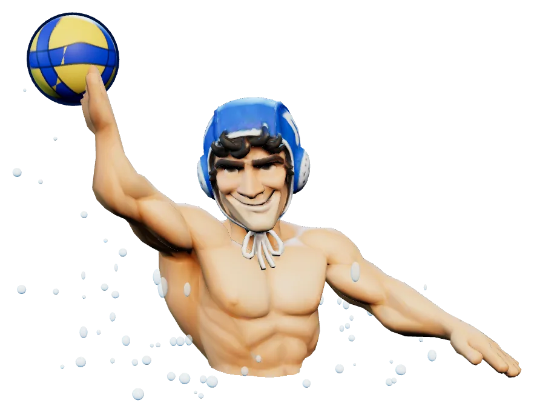
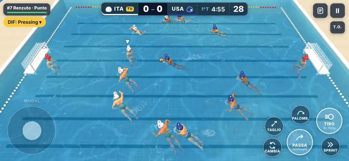

Trascina il joystick per nuotare
Tieni premuto per caricare, un tocco = tiro di polso, due tocchi = finta
Passaggio al compagno nella direzione in cui spingi
Un tocco prova a rubare palla, tenuto = fallo voluto
Nuota più veloce (consuma energia); nella lotta al centro spingi
Seleziona il compagno più vicino alla palla
Tiro a parabola sopra il portiere
In attacco un compagno taglia verso porta, in difesa raddoppio
Tocca lo schema in alto a sinistra per cambiarlo
In alto a destra; time-out solo con la palla
Con il controller: levetta sinistra muove · A passa · X tiro · Y palombella · B taglio · LB cambia · RB sprint · Start pausa.